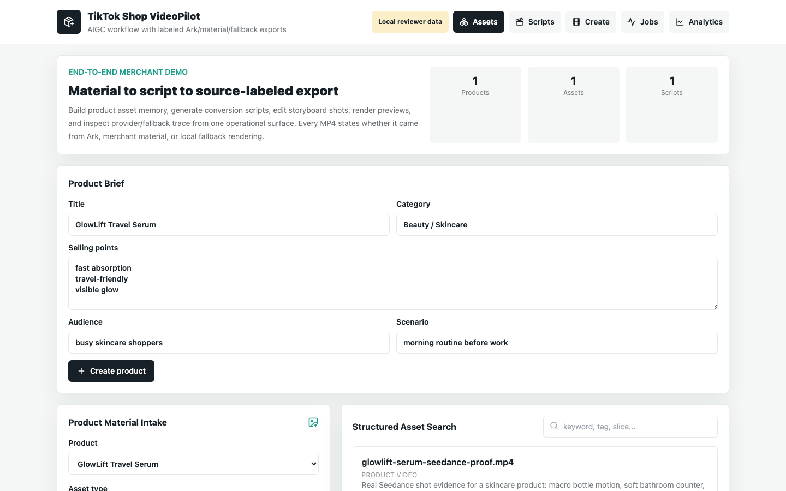
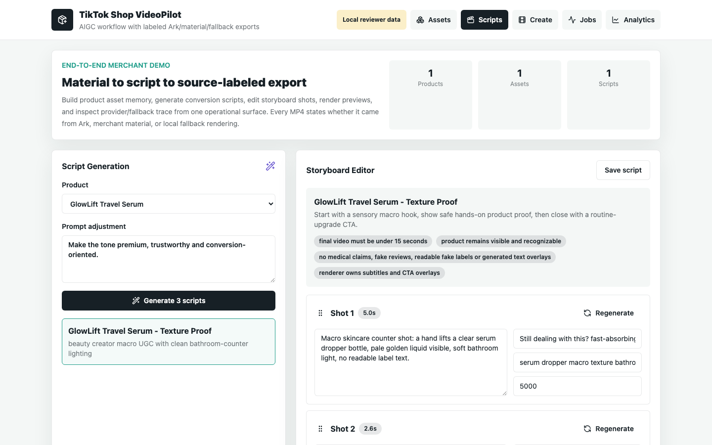
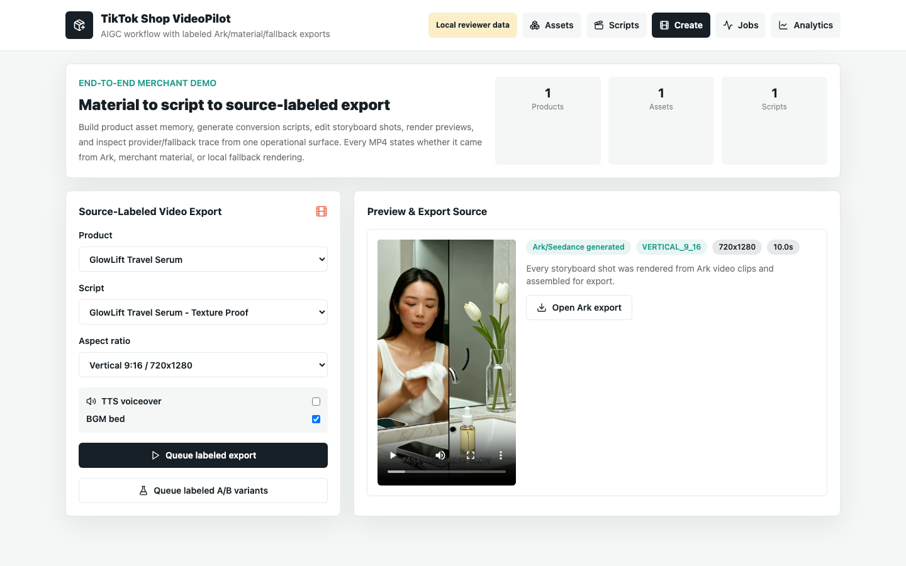
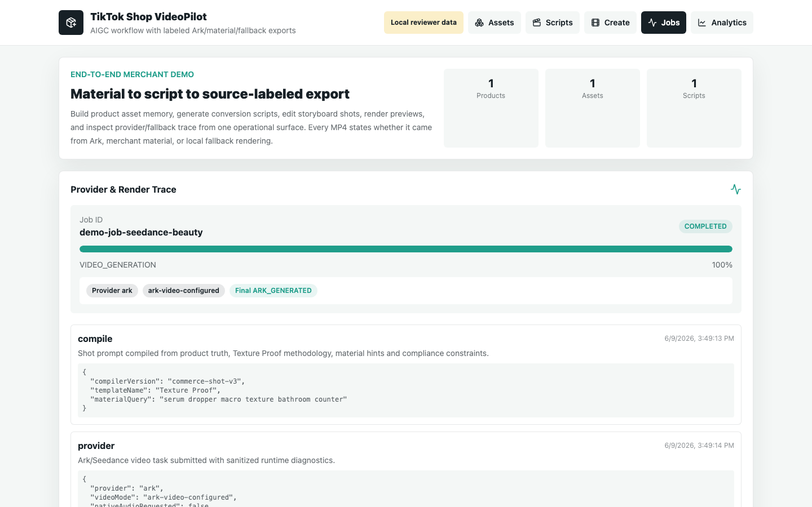
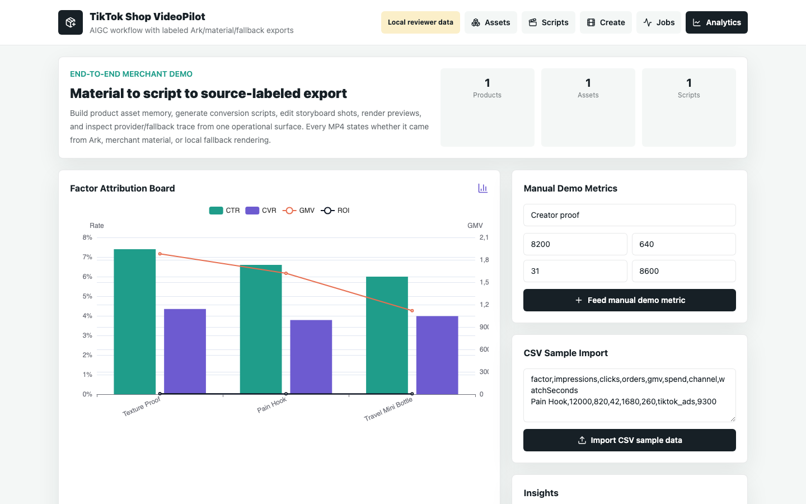

先看完整演示
4 分钟演示覆盖素材库、剧本生成、分镜编辑、一键成片、任务进度、预览导出、A/B 数据看板和工程架构。真实广告视频样例时长控制在 15 秒以内。
核心业务价值
不是单点文生视频入口，而是把商家发布短视频前后的关键动作连起来，让 AI 生成结果更可控、更可追踪，也更贴近转化优化。
01素材入库
02剧本生成
03分镜创作
04数据回流
P0 必做链路完整
覆盖商品素材上传、剧本生成、基础分镜、一键成片、任务进度、预览导出。
P1 体验增强
支持素材标签检索、分镜级编辑、字幕 / BGM / TTS Provider、失败重试和生成 trace。
P2 增长闭环
提供 A/B 变体、创作因子归因雏形、Agent-style Prompt 编排和合规审核流。
产品界面
前端默认支持 reviewer fallback 数据，即使后端服务未启动，也能快速看到完整产品价值。





技术架构
前后端分离，长任务队列承接模型生成和视频渲染，AI Provider 可在真实 Ark/Seedance、Hybrid 和 Mock 模式之间切换。
WebReact / Vite 商家工作台
APIFastify / Prisma 服务层
WorkerRedis / BullMQ 长任务
AIArk / Seedance / Hybrid / Mock Provider
VideoFFmpeg 字幕、CTA、封面和导出
GrowthA/B 变体与创作因子看板